FreeCAD Mk2 Enclosure Design¶
A component-by-component breakdown of the Dilder Rev 2 Mk2 enclosure — every body, every peripheral, every dimension choice and the trade-off behind it.
Everything is generated from a single parametric macro (dilder_rev2_mk2.FCMacro) with 100+ spreadsheet aliases. Change a cell, hit recompute, and the entire assembly updates.
Table of Contents¶
- Base Plate
- AAA Battery Cradle
- Top Cover
- Thumbpiece
- Joystick PCB
- Pico 2 W Board
- Piezo Speaker
- MPU-6500 IMU Accelerometer
- TP4056 Charger Module
- AAA Batteries and Clips
- Waveshare E-Ink Display
- AK 62x36 Solar Panel
- Full Assembly
- Pain Points and Lessons Learned
Base Plate¶
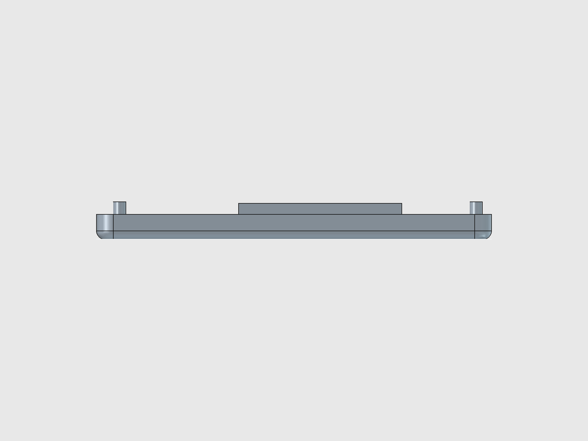
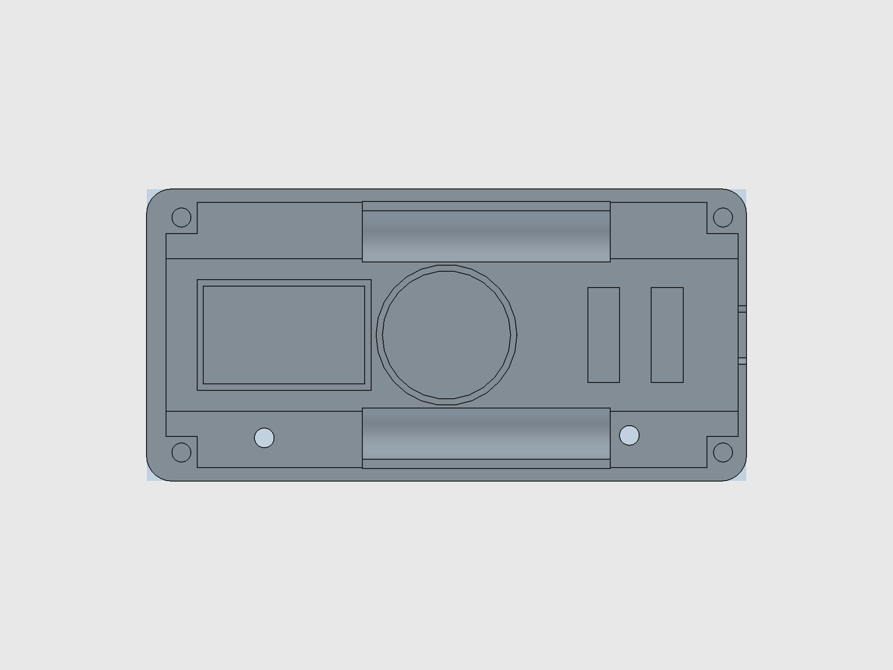
Dimensions: 94.5 x 46.0 x 6.0 mm (post-shave; SCAD builds at 8 mm then removes a 2 mm band from Z=4..6)
Pocket floor: 2.6 mm thick — the thinnest printable floor that still survives M3 screw clamping without cracking.
Key features¶
| Feature | Specs | Purpose |
|---|---|---|
| Corner pillars (4x) | 5 x 5 mm, full height | Structural columns; cradle and cover stack on top |
| Alignment pegs (4x) | 3 mm dia, 3 mm tall, 0.4 mm chamfer | Locate cradle and cover; chamfer eases assembly |
| Extension wings (4x) | 30 x 4 mm shelves | Increase contact area between pillar and pocket floor |
| USB-C cutout | 9.2 x 4.45 mm, 1 mm corner radius | Pass-through for TP4056 charger connector; 0.2 mm tolerance over USB-C spec |
| Battery rail supports (2x) | 39 x 9.5 mm, 5 mm lift | Elevate AAA bays above pocket floor for component clearance |
| Battery cylinder cuts (2x) | 11.1 mm dia, 39 mm long | Cylindrical subtractions shaped to AAA cell profile |
| USB support blocks (2x) | 5 x 15 mm | Platform under the USB-C cutout so the TP4056 board doesn't sag |
| Solar pit | 62.4 x 36.4 x 2.0 mm | Recessed pocket on the bottom face for the AK 62x36 panel |
| Wire holes (2x) | 3.1 mm dia, through-all | Solar lead pass-through from bottom to cavity |
| Piezo ring | 22.2 mm OD, 20.2 mm ID, 1.5 mm wall | Circular retaining wall for the 20 mm piezo disc |
| IMU pocket | 27.4 x 17.4 mm outer, 25.4 x 15.4 mm inner | Rectangular retaining wall for the GY-6500 module |
Design nuance¶
- The pocket floor was originally 1.6 mm ("thin floo" preset) but printed parts cracked under M3 torque. Bumped to 2.6 mm ("thick floo").
- USB-C cutout uses three primitives (main box + bottom strip + two arc cylinders) to approximate a rounded rectangle — FreeCAD PartDesign doesn't have a native rounded-rect pocket.
- Battery rails are lifted 5 mm above the pocket floor so the Pico board, wiring, and TP4056 fit underneath. The cylindrical bay cuts use a rotation placement to orient the cylinder axis along X.
- The piezo ring center (47.35, 23.0) and IMU pocket center (21.65, 23.0) share the same Y coordinate — both sit on the enclosure centerline between the two battery rail supports (23 mm gap).
AAA Battery Cradle¶
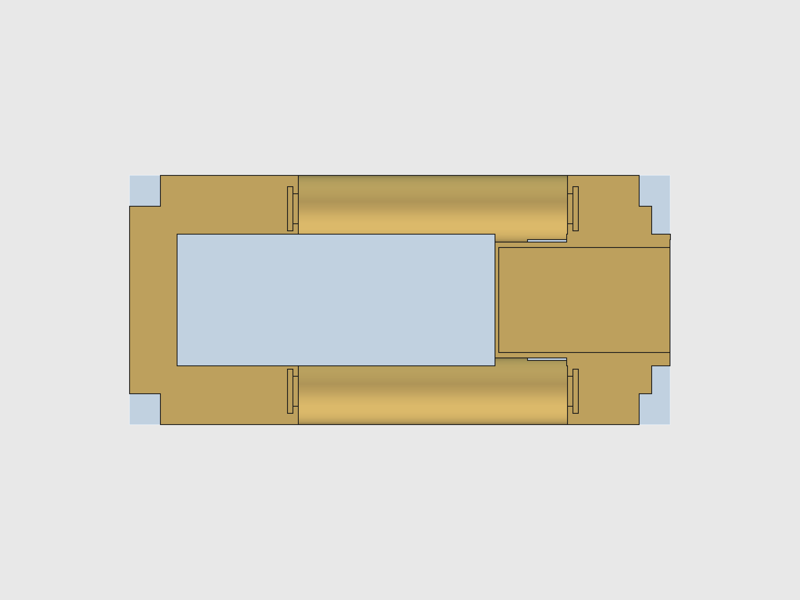
Dimensions: 89.91 x 41.4 x 12.1 mm plug body (plug_x0=3.1 to plug_x1=93.01, plug_y0=2.3 to plug_y1=43.7)
Orientation: Built upright in local coords, then flipped 180 degrees about Y and translated to (96.3, 0, 13.0) in global. Every local X value maps to 96.3 - local_x in global.
Key features¶
| Feature | Specs | Purpose |
|---|---|---|
| Plug body | Sketch + pad, 12.1 mm thick | Main structural insert; drops into the base plate pocket |
| Pillar cutouts (4x) | 5.8 mm square (5 + 0.8 slop) | Clearance holes for the base plate's corner pillars |
| FPC gap | 3.0 mm wide, full Y | Cable routing channel for the display's FPC ribbon |
| Pico nest | 78 x 21 mm | Recessed pocket sized to the Pico 2 W board outline |
| -X inset + ConnBlock | 29 mm deep, refilled with solid block | Creates a ledge for the Pico to rest on while keeping the FPC gap open |
| Display connector cutout | Variable length | +X end clearance for the display's flex connector |
| AAA bays (2x) | 11.1 mm dia, 44.5 mm long | Cylindrical pockets sized to AAA cells + contact spring space |
| Bay top openings (2x) | Full-width cuts | Open the bay tops for cell insertion |
| TP4056 indent | 28 x 17 mm, 1 mm deep | Shallow pocket that locates the charger module PCB |
| Clip slots (4x) | 7.0 x 0.5 mm per slot | Thin slits for battery clip plates at each bay end |
| Clip retainer windows (4x) | 5 x 5 mm, extended 4 mm in Z | Relief cuts so clips can flex during insertion |
| Joystick PCB pit | 20 x 20 mm, 8.45 mm deep | Recessed pocket for the joystick breakout board |
Design nuance¶
- The cradle is the most complex body (38 features). The 180-degree Y flip means every X coordinate is mirrored — mentally exhausting to debug.
plug_x0shifted from 3.3 to 3.1 to give the Pico board 0.2 mm more clearance on the +X global side.- The joystick PCB pit was tightened from 23 mm to 20 mm (board is 19.6 x 19.6 mm). At 23 mm the board rattled; at 20 mm it's a snug slide-fit with 0.2 mm per side.
- Pit Y center moved from 23.67 to 23.0 to match the corrected PCB bbox-center placement (see Pain Points).
- The ConnBlock + battery arc re-cuts are the trickiest sequence: the block fills in the -X inset, then the arcs re-carve the battery profile through it, then bay re-cuts open the pockets from the clip area through the block.
Top Cover¶
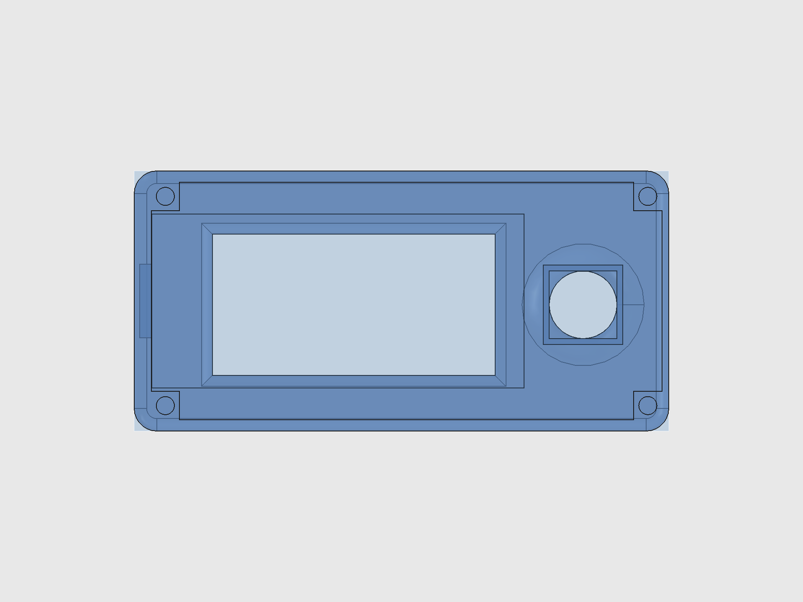
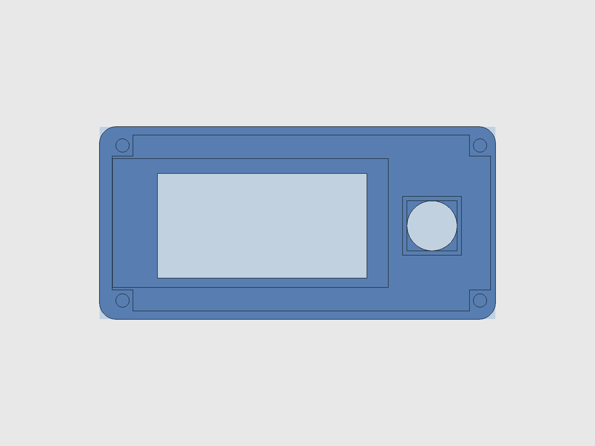
Dimensions: 94.5 x 46.0 mm footprint, 12.0 mm local height (face plate at Z=7, bullnose dome to Z=12), 5 mm wall extension below the mating face.
Key features¶
| Feature | Specs | Purpose |
|---|---|---|
| Outer shell | Sketch + pad, 17 mm total | Full-height box including 5 mm wall extension |
| Corner fillets | 4.0 mm radius on vertical edges | Rounded corners for comfort and aesthetics |
| Bullnose dome | 2.2 mm edge radius on top face | Smooth convex top surface (adjustable via tc_edge_r) |
| Interior cavity | 90.3 x 42.0 mm | Hollowed-out interior; floor at face_bot = 7.0 mm local |
| Corner pillars (4x) | 5 x 5 mm | Mirror the base plate pillars; M3 bores pass through |
| M3 bores (4x) | 3.2 mm dia | Screw holes for clamping the stack together |
| Screen inlay | 65.8 x 30.7 mm, 3.0 mm deep | Recessed pocket for the Waveshare display module |
| FPC divet | 13.0 mm wide, extends below inlay | Channel for the display's FPC cable to exit the inlay |
| Display window | 50.0 x 25.0 mm, shifted +2.8 mm in X | Through-cut exposing the e-ink active area |
| Joystick hole | 12.0 mm dia cylinder | Through-cut for the thumbpiece and actuator stick |
| Joystick anchor pad | 14 x 14 mm outer, 12 x 12 mm inner, 6.85 mm deep | Locating collar for the K1-1506SN-01 switch body |
Design nuance¶
- The anchor pad depth (6.85 mm) is calculated to stop exactly at the PCB top surface: pit floor (9.65) + PCB thickness (1.5) = 11.15 global Z = 0.15 cover local Z. Depth = face_bot (7.0) - 0.15 = 6.85 mm. Going even 0.1 mm deeper causes the anchor to intersect the joystick PCB.
- The bullnose fillet radius controls how "domed" the top looks. At 4.0 mm (=
tc_bull) the dome is pronounced; at 2.2 mm (tc_edge_r) the face plate edge is subtler. Both are spreadsheet params. - The screen inlay
disp_xlwas widened from 65.0 to 65.2 mm (+0.2 mm on the +X side) to accommodate the Waveshare V3 board's actual PCB length, which was binding against the inlay wall. - Window Y center is locked to the joystick Y center so they share a visual centerline.
Thumbpiece¶
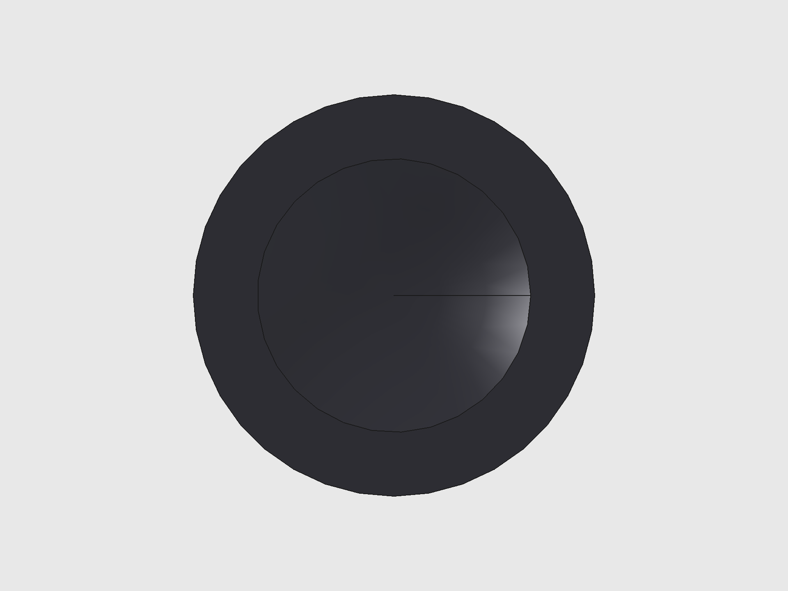
Dimensions: 11.0 mm OD x 4.5 mm tall. Nests inside the cover's 12 mm joystick hole with 0.5 mm radial clearance all around.
Key features¶
| Feature | Specs | Purpose |
|---|---|---|
| Disc body | 11.0 mm OD, 4.5 mm tall | Main cylindrical body; OD = joy_d - 1.0 for swing clearance |
| Thumb dish | R=12 mm sphere, 0.6 mm deep | Concave landing pad for the thumb; shallow enough to leave 0.35 mm skin above the socket |
| Snap socket | 3.3 x 3.3 x 3.5 mm | Friction-fit rectangular pocket that grips the 3.2 mm actuator peg |
Design nuance¶
- Critical constraint:
thumb_dish_d < thumb_h - thumb_top_clr - thumb_sock_d. At 1.5 mm dish depth, the dish bottom punched through into the socket cavity, creating a hole straight through the cap. Fix: 0.6 mm depth, leaving 0.35 mm solid skin. - The socket is centered on the disc axis, not the peg axis. The peg is offset +0.68 mm in Y from the hole center, but the 3.3 mm socket width absorbs this offset. After the PCB alignment fix, the peg is now only 0.01 mm off-center so this is no longer a concern.
- The thumbpiece is its own PartDesign Body (not part of the TopCover) so it can be printed separately in a different material or color.
Joystick PCB¶
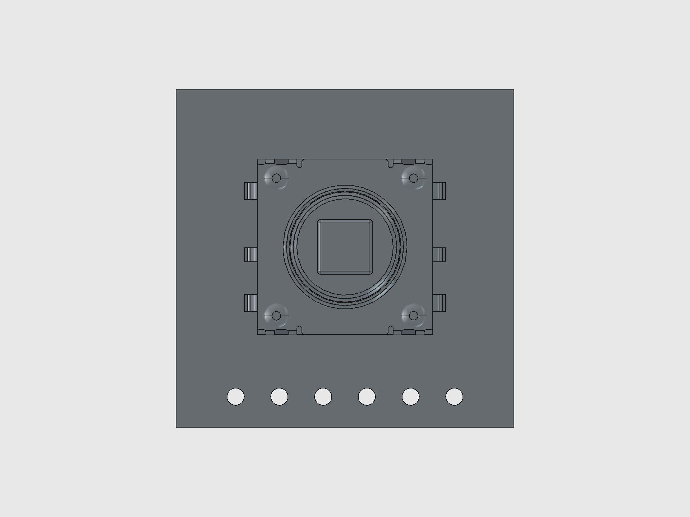
Board: 19.6 x 19.6 mm, hand-routed in KiCad 10 from scratch. STEP exported with kicad-cli pcb export step --subst-models --include-tracks.
Switch: K1-1506SN-01 — 10.2 x 10.2 x 10 mm body, 3.2 mm rectangular actuator peg, 5-way (up/down/left/right/push).
Design nuance¶
- The STEP import filters out the switch pin-lead solid (80-180 mm^3 volume range) to keep the model clean while retaining the PCB, switch body, and actuator stick.
- PCB is placed bbox-centered at
enc_y/2 = 23.0in global Y. The old code placed it atenc_y/2 + 0.67which double-applied the SW1 offset — the cover hole already shifts byjoy_pcb_y_offsetto land on the switch stick, so applying it again to the PCB moved the stick 0.68 mm off-center from the hole. - The board drops into the cradle's 20 x 20 mm pit (pit floor at global Z=9.65). The anchor pad on the cover wraps around the switch body from above, stopping at the PCB top surface.
Pico 2 W Board¶
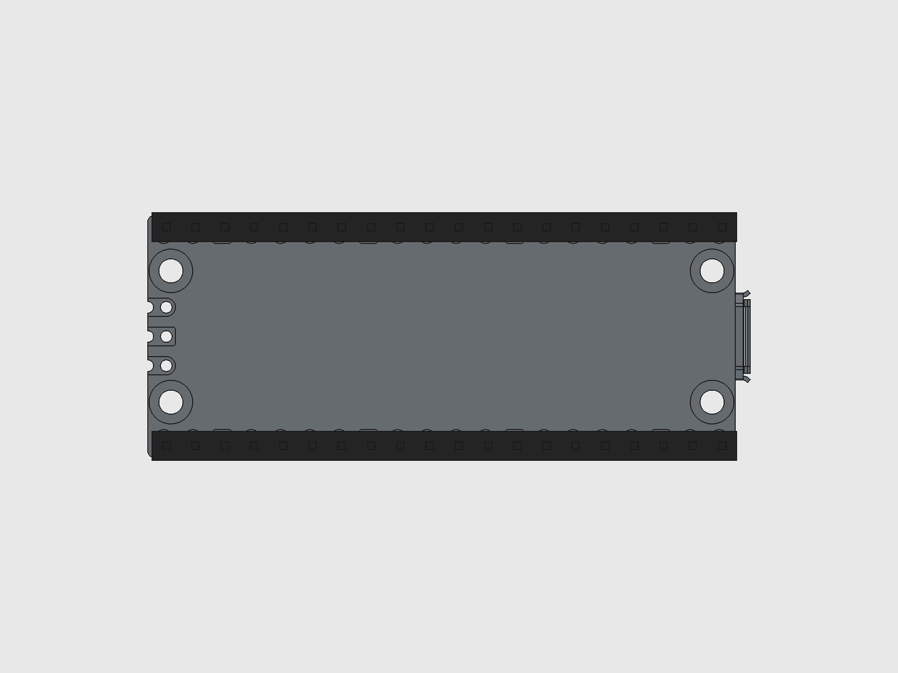
Board: 51 x 21 mm, imported from the official Raspberry Pi STEP file. Headers are procedural (not in the STEP) — 2 rows of 20 pins at 2.54 mm pitch, 8.5 mm black housings with 3 mm gold pin protrusions.
Orientation: Flipped 180 degrees about Z so the USB-C connector points toward the +X wall (matching the base plate's USB-C cutout).
Piezo Speaker¶
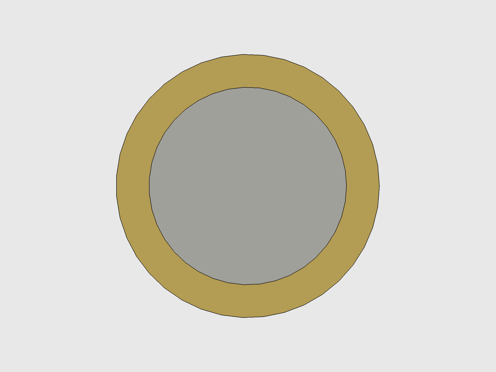
Specs: 20 mm brass plate (0.20 mm) + 15 mm ceramic element (0.22 mm) = 0.42 mm total thickness. Resonant frequency 6.8 kHz.
Mounting: Slides into the PiezoRing on the base plate pocket floor. Ring ID = 20.2 mm (0.1 mm clearance per side), wall = 1.0 mm, height = 1.5 mm.
Position: Center (47.35, 23.0) — dead center of the base plate, in the 23 mm Y gap between battery rail supports.
MPU-6500 IMU Accelerometer¶
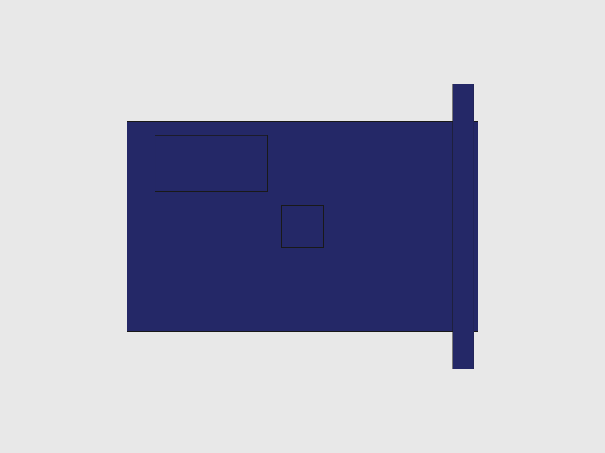
Specs: 25 x 15 x 1.0 mm PCB, MPU-6500 QFN (3 x 3 x 0.9 mm), 8-pin header on one short edge. I2C/SPI, 3-5V with onboard regulator.
Mounting: Drops into the IMU_Pocket on the base plate. Pocket inner cavity = 25.4 x 15.4 mm (0.2 mm clearance per side), retaining wall = 1.0 mm thick, 1.5 mm tall.
Position: Center (21.65, 23.0) — same Y as piezo, shifted 2 mm from the piezo ring's -X edge toward the origin. Oriented with 25 mm along X, 15 mm along Y.
WiFi note: Neither the IMU nor its plastic retaining wall interfere with the Pico W's 2.4 GHz WiFi. The MPU-6500 is an I2C/SPI sensor at low frequencies, and the retaining wall is printed plastic, not metal.
TP4056 Charger Module¶
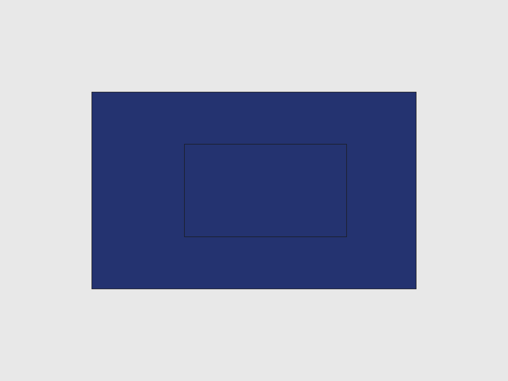
Specs: 28 x 17 x 1.6 mm PCB. USB-C connector points +X toward the base plate cutout.
Mounting: Sits in the cradle's TP4056_Indent (1 mm deep pocket). Board top face is flush with the cradle mating face at global Z=6.0.
AAA Batteries and Clips¶
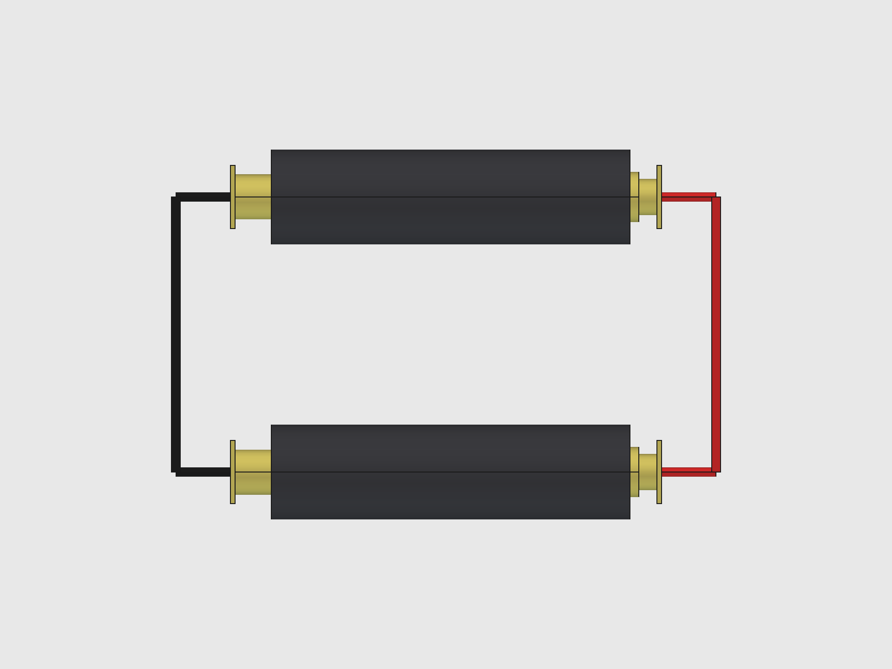
Cells: Two AAA Li-Ion (10440) cells, 10.5 mm dia x 39.5 mm long, with 5.5 mm brass positive terminal caps. Wired in parallel only (2S would exceed Pico VSYS 5.5V max).
Clips: Swpeet 7 x 7 mm sheet metal plates in the cradle's clip slots. Positive plates face the cell's nub end; negative plates with springs face the flat end.
Waveshare E-Ink Display¶
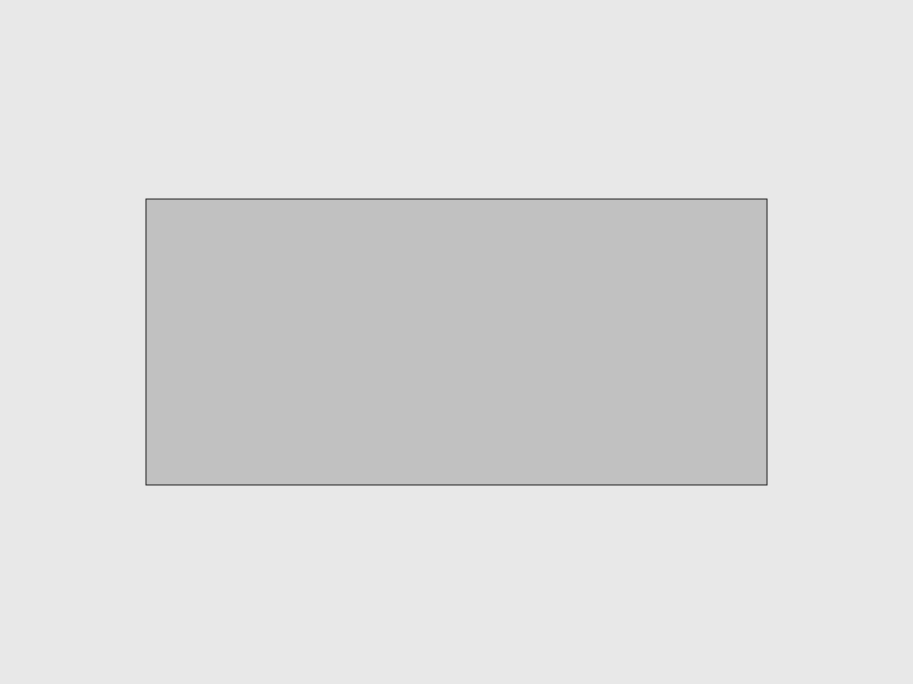
Specs: 250 x 122 px, 65.2 x 30 x 3.0 mm module. Active e-paper area 48 x 22 mm, shifted +2.8 mm toward +X.
Mounting: Drops into the cover's screen inlay pocket (65.8 x 30.7 mm with slop, 3.0 mm deep). Module back at global Z=18.0, active panel visible through the display window.
AK 62x36 Solar Panel¶
Specs: 62 x 36 x 2.0 mm. Cell layer inset 1.5 mm from frame edges. Red (+) and black (-) leads through the base plate wire holes.
Mounting: Sits flush in the 62.4 x 36.4 x 2.0 mm solar pit on the base plate bottom face.
Full Assembly¶
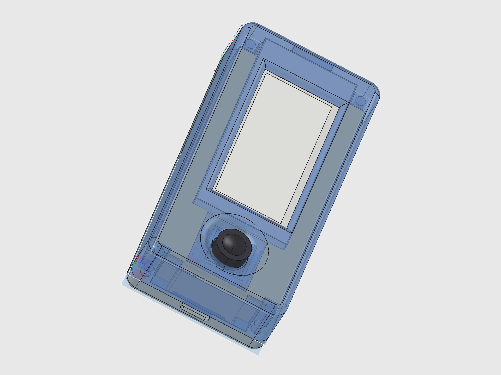
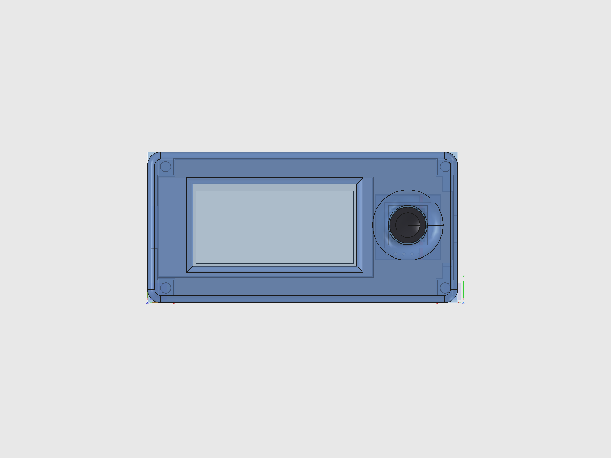
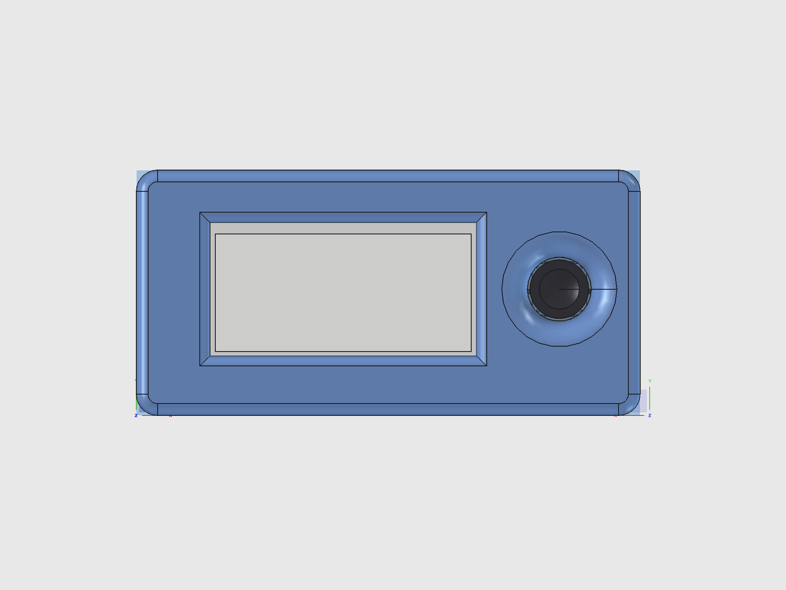
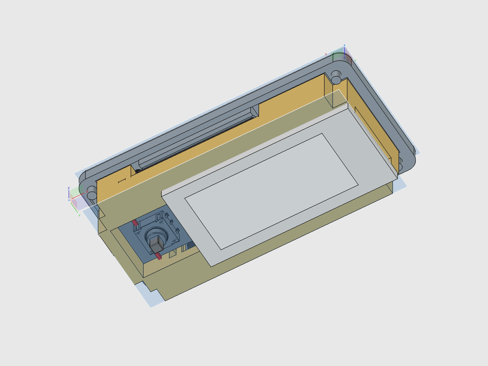
Assembly order¶
- Solar panel glues into the base plate bottom pit
- Piezo disc slides into the PiezoRing on the pocket floor
- IMU module drops into the IMU_Pocket
- Cradle drops onto the base plate — pillar cutouts align with the base plate pillars, pegs locate it
- AAA batteries slide into the cradle bays from the top
- Battery clips press into the clip slots at each bay end
- TP4056 module seats into the TP4056_Indent, USB-C pointing +X
- Pico 2 W sits inverted in the Pico nest, USB-C aligning with the base plate cutout
- Joystick PCB drops into the cradle pit (20 x 20 mm snug fit)
- Display module lays into the cover's screen inlay pocket
- Top cover drops on — anchor pad guides the joystick switch body, pillar bores align with pegs
- Thumbpiece snaps into the 12 mm joystick hole — socket friction-fits onto the actuator peg
- M3 screws (4x) through the cover bores into the base plate pillars clamp the stack
Pain Points and Lessons Learned¶
The Y-offset double-application bug¶
The joystick switch (K1-1506SN-01) is placed +0.67 mm off-center on the PCB layout. The cover's joystick hole shifts by this offset so the hole lands on the stick. But the PCB placement code also applied the offset: joy_cy_g = enc_y/2 + 0.67. This meant the PCB shifted, which shifted the stick, which moved it 0.68 mm from the hole center. Fix: PCB at enc_y/2 (bbox center only), hole at enc_y/2 + 0.67. Now the stick is 0.01 mm from dead center.
Cradle 180-degree flip mental model¶
The cradle is built "right side up" in local coords then flipped 180 degrees about Y for assembly. Every local X maps to 96.3 - local_x in global. This means "move the +X wall" requires changing plug_x0 (the local minimum), not plug_x1. Every debuggging session involves mentally flipping coordinates. Comments are critical.
The dish-through-socket failure¶
The thumbpiece's concave dish was initially 1.5 mm deep. The socket below is 3.5 mm deep starting from the bottom of a 4.5 mm disc. That leaves 4.5 - 0.1 (top clearance) - 3.5 (socket) = 0.9 mm above the socket. A 1.5 mm dish punched right through. The constraint dish_d < h - top_clr - sock_d is now documented in the parameter description.
Fillet edge selection in PartDesign¶
find_edges(feature, "vertical") returns ALL vertical edges in the cumulative body shape, not just the ones belonging to that feature. Early in the build (Pad_Shell has 4 vertical edges) this works. Late in the build (the anchor pad stage has hundreds of edges) it grabs pillars, cutouts, bores — everything. The fillet tries to round them all and the body breaks. Fix: filter by XY position, only selecting edges within the feature's footprint. Or just add fillets manually in the FreeCAD GUI after the macro runs.
Pit wall fill pieces¶
When the joystick pit extends past the ConnBlock boundary, there's a gap in the cradle wall where the FPC gap meets the pit edge. This required 5 separate additive boxes to fill: PitWallFill_PY, PitWallFill_PY_Ceil, PitWallFill_PY_Wall, and the -Y equivalents. After tightening the pit from 23 to 20 mm, the +Y fills became unnecessary (pit edge is now inside the ConnBlock), so the code uses size guards (if fill_y1 > fill_y0) to skip them dynamically.
Display inlay binding¶
The Waveshare V3 module's actual PCB length was 0.2 mm longer than the datasheet nominal. The display bound against the +X inlay wall and wouldn't seat flush. Fix: disp_xl increased from 65.0 to 65.2 mm. Total inlay with slop: 65.2 + 2 x 0.3 = 65.8 mm.
Source: hardware-design/freecad-mk2/dilder_rev2_mk2.FCMacro
Renders generated by: hardware-design/freecad-mk2/render_views.FCMacro